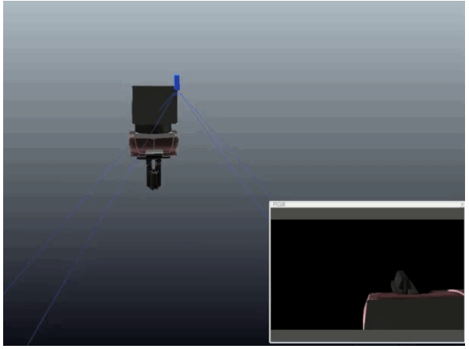
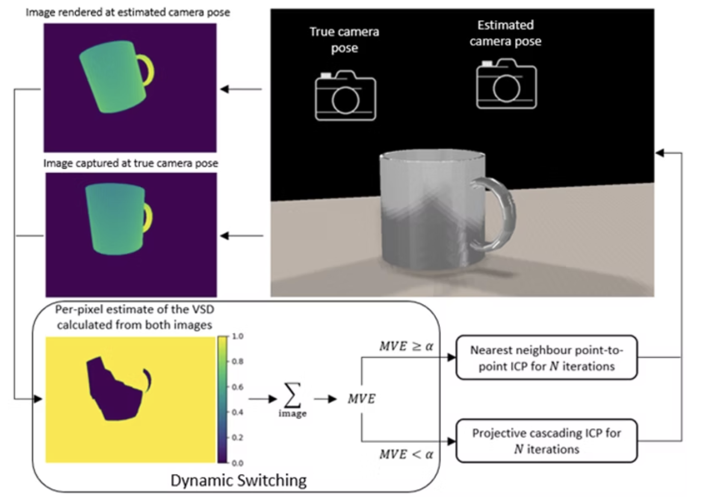

We explored learning-based approaches for extrinsic calibration of wrist-mounted RGB cameras using only single images. Through comparative analysis of multiple methods, we discovered that direct regression of calibration parameters outperformed both alternative learning-based techniques and classical marker-based calibration approaches. This finding demonstrates that data-driven methods can achieve superior calibration accuracy while eliminating the need for physical markers, streamlining robot deployment in new environments.

We found that traditional ICP algorithms rely on fixed data association methods and error metrics, limiting their adaptability to varying scene conditions. To address this, we developed a dynamic ICP variant that automatically optimizes both data association and error metrics in real-time based on live object observations and current pose estimates. Through experimental validation, this adaptive approach achieved superior registration accuracy compared to fixed-parameter methods, particularly in challenging scenarios with partial occlusions and varying object geometries.